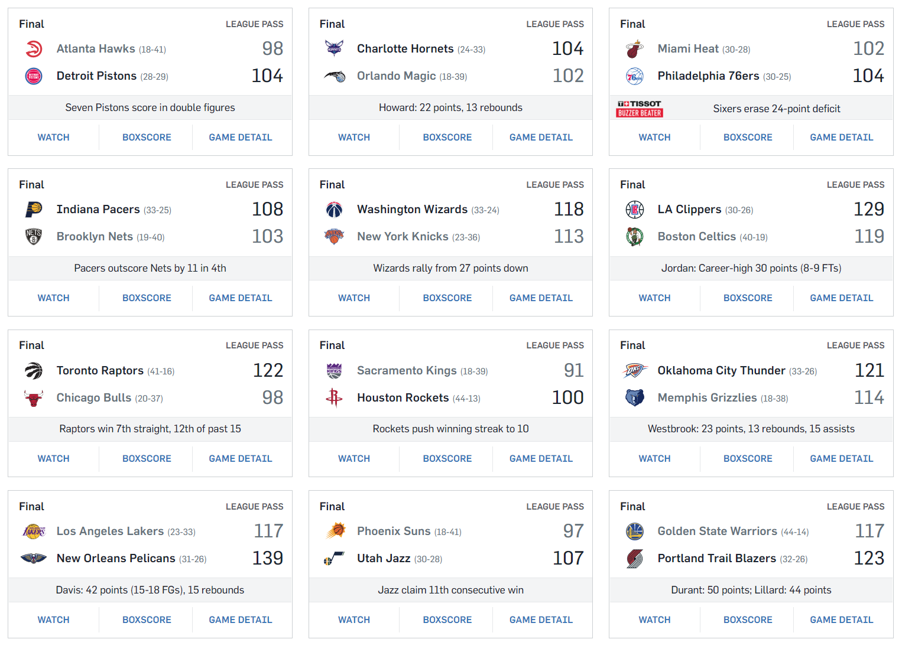
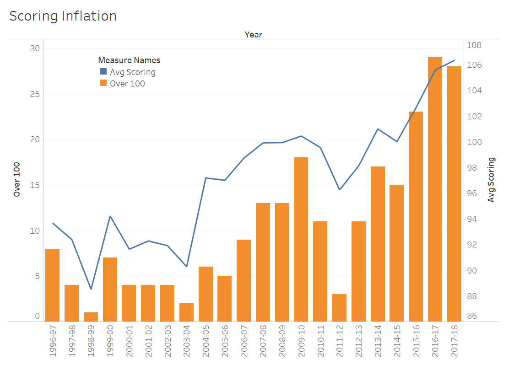
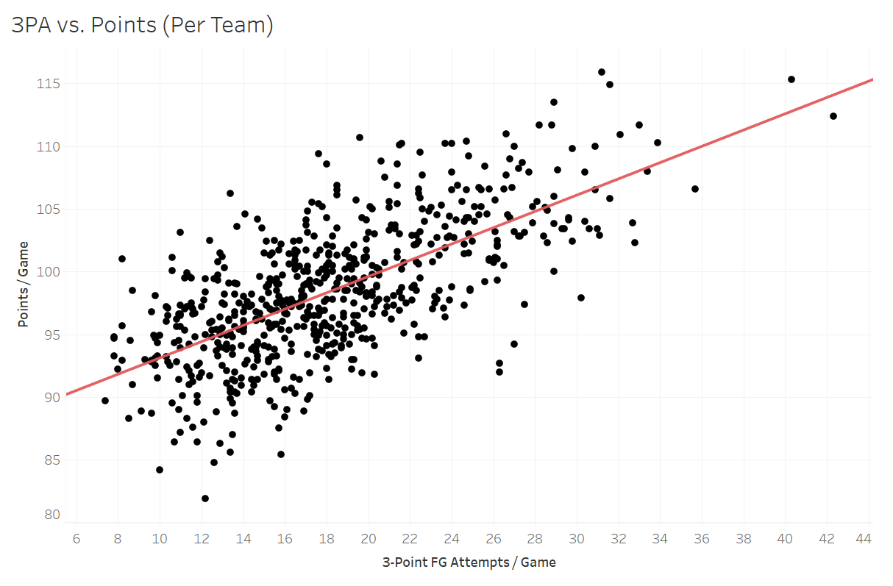
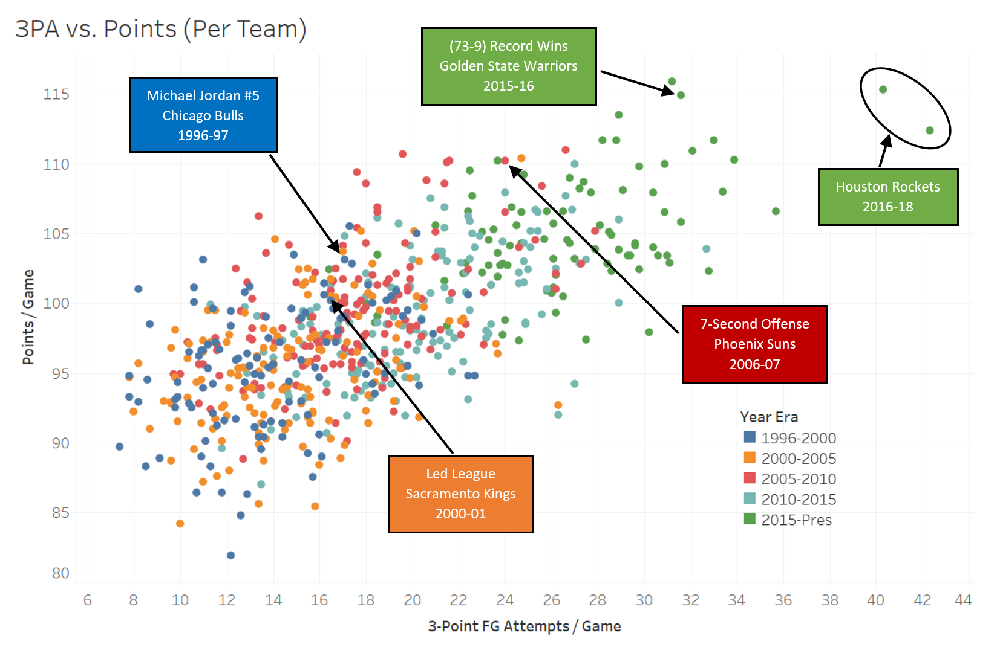

How Analytics Has Changed the NBA
Growing up, I remember going to an NBA game and hoping one team would hit triple-digits in scoring. That was a real feat, and something that only a good team on a good night would reach. Well not anymore. Perusing NBA scores around the league this season has been eye-opening as I would routinely see teams score 120 (!) while sometimes finding it a rarity to see a team score under 100 points. Below are the scores from February 14, 2018 which had 12 games.
Of the 24 teams that played that night, there were four who scored under 100, while five scored over 120! And in case you think I just chose an abnormal day, if you take the entire week from February 9-15 there were 22 teams who scored under 100 and 21 teams who scored over 120. It amazes me how common seeing that many points in a game is in today’s game.
To get a wider perspective, the chart below shows that in the last 22 seasons, average scoring has trended up and up. In fact, in an 18-year span from 1998-2016 the NBA went from having 29 teams averaging less than 100 points to 29 teams averaging more than 100 points.
So, you might ask: why is this the case? While there are definitely other factors at play, I would attribute it to analytics and the increased value seen in the three-point shot. Let’s take a quick gander at some NBA data. I pulled data from 1996 to this season (2017-18) and the scatter plot below shows “Points per game” vs. “3-point field goal attempts per game.” Each point is one team’s season. Take a look for yourself:
From the line we can see there is a positive correlation between these two metrics, meaning that generally the more 3-point field goals a team attempts per game, the higher that team’s scoring average will be. Okay, so even if there is a correlation between scoring and 3-pointers attempted, what does that have to do with analytics? I’m so glad you asked.
Everybody knows that three is more than two. But not until Stephen Curry took the NBA by storm starting in the 2012-13 season did casual observers begin to understand the potency of the three-point shot. Let’s first talk about the three-point field goal briefly. In 2005-06, Ray Allen (269) broke Dennis Scotts’ single-season record (267) for three-point field goals made (3PM) that had stood for 10 years. Seven years later, Stephen Curry broke Ray Allen’s record by three with 272 in the 2012-13 season. Then, from 2013-2017, Curry made more than 272 three-pointers three more times, including the first time anyone broke the 300- AND 400-3PM threshold in 2015-2016.
So why does this matter? So one guy has made a name for himself making a ridiculous number of threes. Well the analytics back up that notion, as seen in the nascent “true field goal percentage” stat. This stat gives more weight to three-point field goals made since they count for 3 points vs. 2 points for a normal field goal. Imagine this scenario: 1) Player A shoots 10 normal field goals every game and shoots 50% while 2) Player B also shoots 10 field goals every game, but all three-pointers, and shoots 40%. Even though Player B shoots at a lower percentage, he would average more points (4 out of 10 * 3 points = 12) compared to the higher shooting Player A (5 out of 10 * 2 points = 10). This is the idea behind true field goal percentage.
Enough talking and math, here’s another pretty picture which takes the plot from above and divides it into different 5-year groupings: (1996-2000), (2000-2005), 2005-2010), (2010-2015), and (2015-Present).
Now we can see how scoring and three-point field goals have inflated over time. Take the 2000-01 Sacramento Kings who led the league in scoring that year versus the most recent two Houston Rockets teams and the huge gap between them. Not only is there a positive correlation between the two, but there has been a clear movement toward higher scoring and three-point field goal attempts in just the last few years. If we look closely, we can see that the dots on the chart from 1996-2010 are generally in the same area, meaning that points per game and three-point attempts were stable from year to year. But when you look at the dots in 2010-2015 and 2015-Present, there is clear movement to the top right (inflated scoring and attempts) as teams starting jacking up more and more threes.
This last chart shows that the NBA has changed so much that there are almost no current teams with comparative play to teams just 20 years ago. Analytics has shown that the three-pointer is more valuable in terms of scoring than a mere two-pointer. As a result, teams are taking a larger volume of three-point shots in an attempt to outscore their opponent. The issue now is that since scoring output has increased across the league, there is no competitive advantage. Simply, a need for better defense. Please, let’s see some more defense.